Ракета
до Луны!
Кубик станет стартовой площадкой, цилиндр — корпусом, а конус — носом. Кто выглянет из иллюминатора?
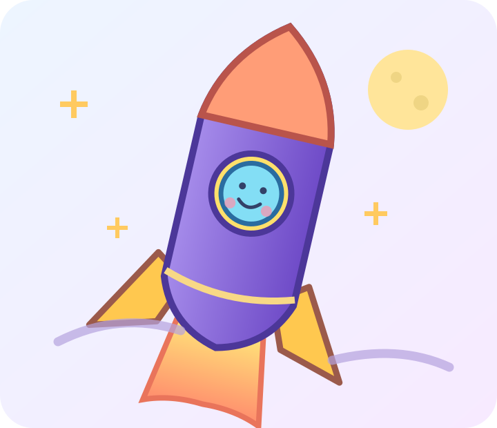
Бип, пристегни ремни!Построй корпус
Сегодня ты превратишь знакомый куб в площадку и откроешь новую форму — цилиндр. Какая ракета тебе нравится: высокая или пузатая?
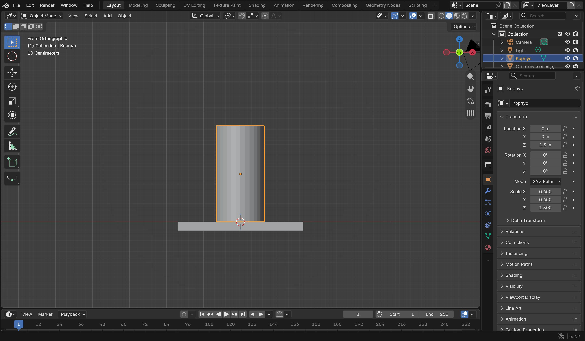
Банка, которая мечтает летать
Это пример из Blender. Форма и размеры твоей ракеты могут отличаться.
-
Подготовь стартовую площадку
Открой новую сцену Blender. Выбери знакомый куб. Нажми S, затем Z и приплюсни его. Расширь через S, X, а потом S, Y. Если захочешь, опусти через G, Z.
Покажи мне: плоская площадка
Настоящий Blender 5.2. Нажми на картинку, чтобы рассмотреть её крупнее. Твоя модель может выглядеть иначе.
Куб стал стартовой площадкой
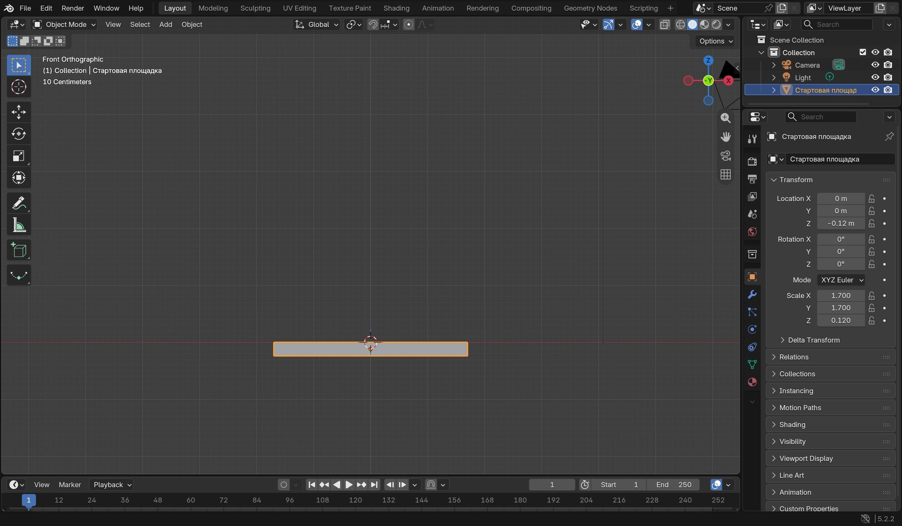
В новой сцене выбери куб. Нажми S, затем Z и сделай его плоским. Через S, X и S, Y расширь площадку. На фото получилось с числами: S Z 0.12, S X 1.7, S Y 1.7, G Z -0.12.
Проверь: Видна широкая низкая площадка. Если не хочется площадку, можно оставить куб для следующего проекта и начать с цилиндра.
-
Познакомься с цилиндром
В режиме Object Mode открой Add → Mesh → Cylinder (Добавить → Сетка → Цилиндр). Это круглый корпус ракеты. Новый цилиндр может сперва скрываться внутри площадки.
Покажи мне: где цилиндр
Настоящий Blender 5.2. Нажми на картинку, чтобы рассмотреть её крупнее. Твоя модель может выглядеть иначе.
Добавь Cylinder
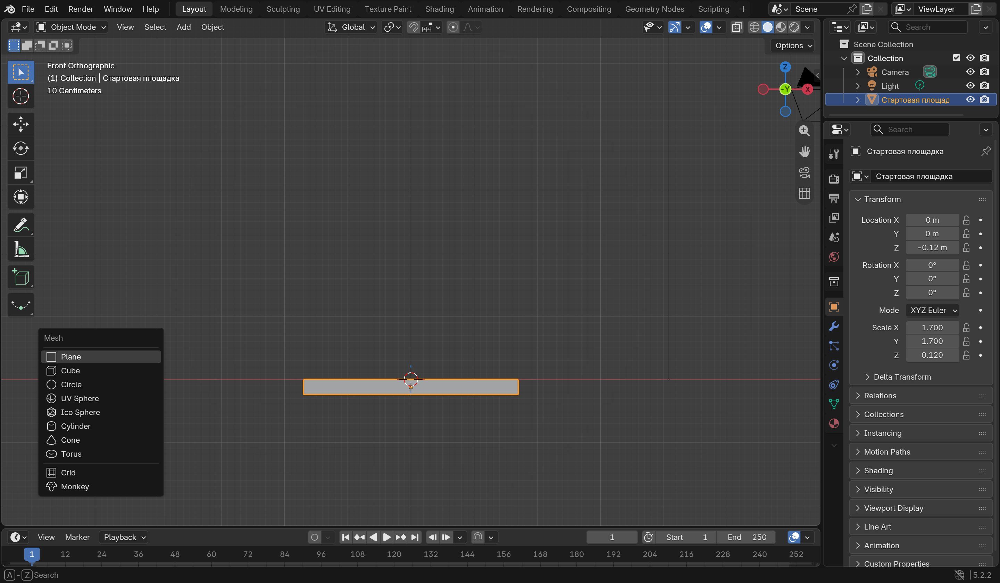
В Object Mode открой Add → Mesh → Cylinder. Cylinder — это цилиндр, круглая банка для корпуса ракеты.
Проверь: Новый цилиндр выбран; пока он может прятаться внутри площадки.
-
Пусть корпус вырастет
Пока цилиндр выбран, уменьши его через S, растяни вверх через S, Z и подними через G, Z. Посмотри спереди: низ корпуса должен касаться площадки.
Покажи мне: поднять корпус
Настоящий Blender 5.2. Нажми на картинку, чтобы рассмотреть её крупнее. Твоя модель может выглядеть иначе.


Что у меня получилось
Нос и крылья
Без острого носа ракета похожа на банку. Конус и два маленьких крыла помогут ей приготовиться к воображаемому полёту.
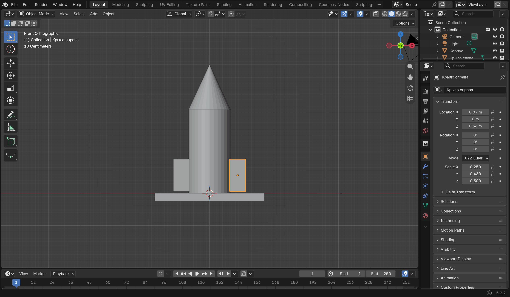
Уже почти взлёт!
Одно крыло тоже подходит. Можно сделать ракете очень большой нос.
-
Найди конус
Открой Add → Mesh → Cone (Добавить → Сетка → Конус). Клавишей S сделай его примерно шириной с корпус. Через G, Z поставь наверх. Если нос слишком высокий, поможет S, Z.
Покажи мне: конус на верхушке
Настоящий Blender 5.2. Нажми на картинку, чтобы рассмотреть её крупнее. Твоя модель может выглядеть иначе.
Добавь Cone
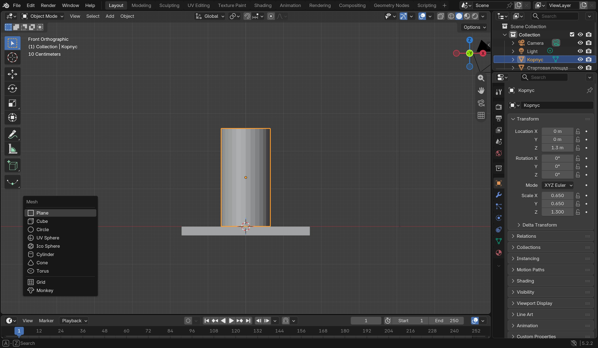
Открой Add → Mesh → Cone. Cone — это конус, будущий острый нос ракеты.
Проверь: Новый конус появился и выбран.
Посади нос на корпус
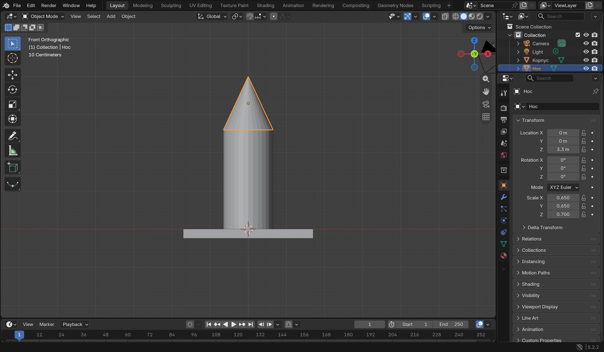
Клавишей S сделай конус примерно шириной с корпус. Через S, Z настрой высоту, затем G, Z подними его на верхушку. На фото нос опирается на корпус, а не висит отдельно.
Проверь: Ракета стала похожа на карандаш с острым носом.
-
Добавь первое крыло
Добавь Cube. Уменьши его клавишей S, передвинь к нижнему краю корпуса через G, X и G, Z. Оно может быть смешным и толстым.
Покажи мне: первое крыло
Настоящий Blender 5.2. Нажми на картинку, чтобы рассмотреть её крупнее. Твоя модель может выглядеть иначе.
Добавь первое крыло
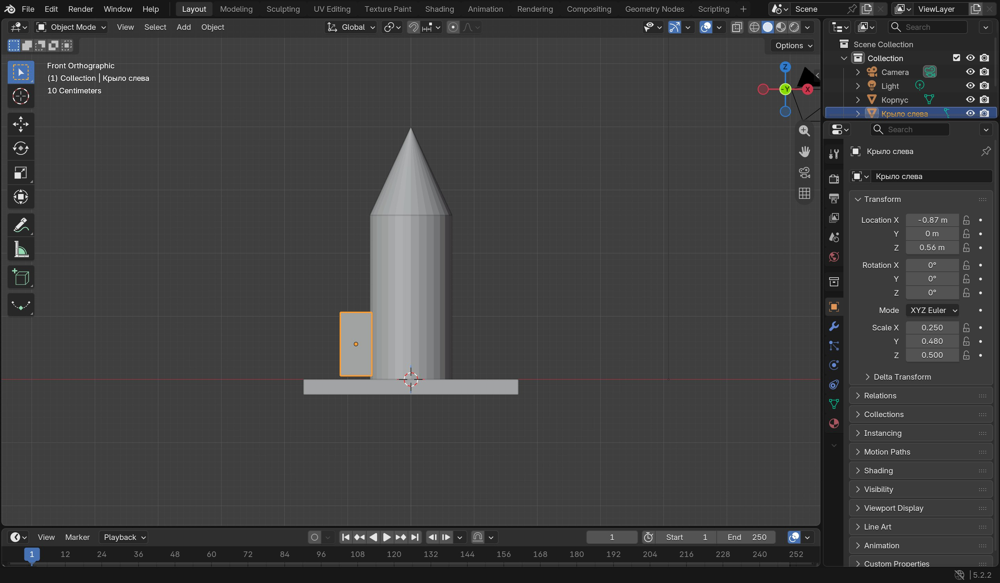
Добавь Cube. Уменьши его с помощью S, сделай широким через S, Y и передвинь к нижнему боку ракеты через G, X и G, Z. Это первое крыло-стабилизатор.
Проверь: Слева или справа от нижней части корпуса есть маленький куб-крыло.
-
Сделай крыло-близнеца
Выбери крыло, нажми Shift+D, потом X. Передвинь копию на другую сторону и щёлкни. Если оба крыла не одинаковые — это ракета с характером!
Покажи мне: второе крыло
Настоящий Blender 5.2. Нажми на картинку, чтобы рассмотреть её крупнее. Твоя модель может выглядеть иначе.


Что у меня получилось
Кто смотрит в окошко?
Добавь круглое окошко и придумай пассажира. Это может быть робот Бип, кот в шлеме или космический бутерброд.
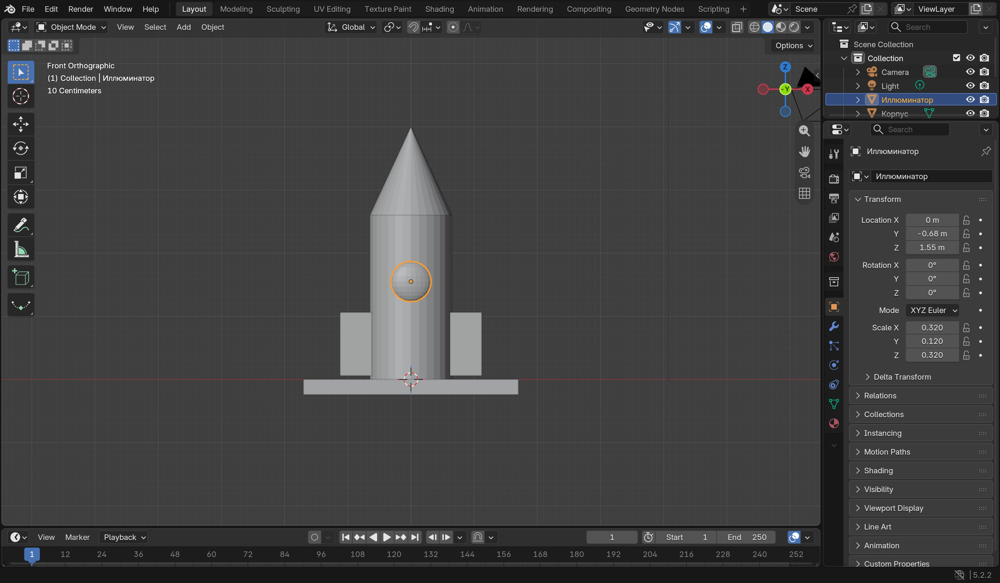
Космическое окно
Чтобы придумать пассажира, не нужно моделировать его целиком.
-
Сделай круглое окошко
Открой Add → Mesh → UV Sphere. Уменьши шар клавишей S и слегка приплюсни через S, Y. Получится аккуратный иллюминатор.
Покажи мне: где найти шар
Настоящий Blender 5.2. Нажми на картинку, чтобы рассмотреть её крупнее. Твоя модель может выглядеть иначе.
Добавь круглый иллюминатор
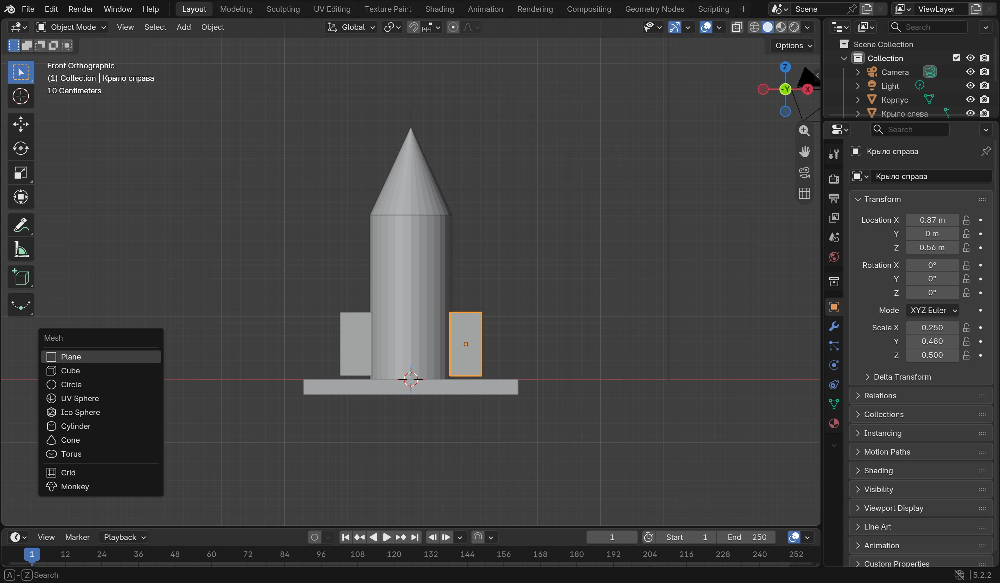
Открой Add → Mesh → UV Sphere. Маленький шар станет окошком для космического пассажира.
Проверь: Новая сфера выбрана.
-
Поставь его на корпус
Нажми G, Z и подними окошко. Затем G, Y вынеси его перед корпусом. Проверь спереди и сбоку: окошко не должно прятаться внутри.
Покажи мне: окно спереди и сбоку
Настоящий Blender 5.2. Нажми на картинку, чтобы рассмотреть её крупнее. Твоя модель может выглядеть иначе.
Поставь окошко спереди
Уменьши сферу через S. Приплюсни её через S, Y, чтобы она не торчала слишком далеко. Подними через G, Z и вынеси перед корпусом через G, Y. На фото помогли S 0.32, S Y 0.375, G Z 1.55 и G Y -0.68.
Проверь: На виде Front окошко видно на корпусе.
Проверь окошко сбоку
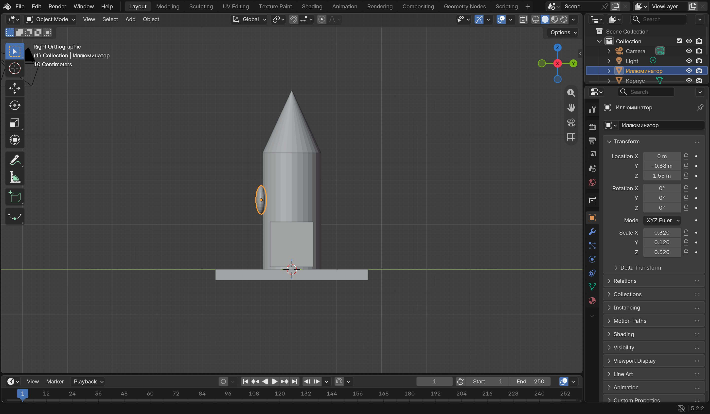
Открой View → Viewpoint → Right. Сбоку видно, спрятана ли сфера в корпусе. Если да, вернись на Front и подвинь её через G, Y. Выбирай нужную сторону мышью.
Проверь: Окошко немного выступает из корпуса и не висит далеко от него.
-
Придумай пассажира
Скажи вслух: «В моей ракете летит… Его зовут…» Выбери, куда она отправится. Может, это планета мармеладных вулканов?
Хочу добавить ещё одно окошко
Выбери первое окошко, нажми Shift+D, затем Z и подними копию. Это тот же приём копирования, что и для крыльев. Второе окно необязательно; достаточно истории и одного окошка.
Покажи мне: как работает копия
Настоящий Blender 5.2. Нажми на картинку, чтобы рассмотреть её крупнее. Твоя модель может выглядеть иначе.


Что у меня получилось
Раскрась и отправь в полёт
Осталось выбрать цвет, сохранить ракету и устроить маленькую премьеру. Цветов может быть столько, сколько тебе хочется.
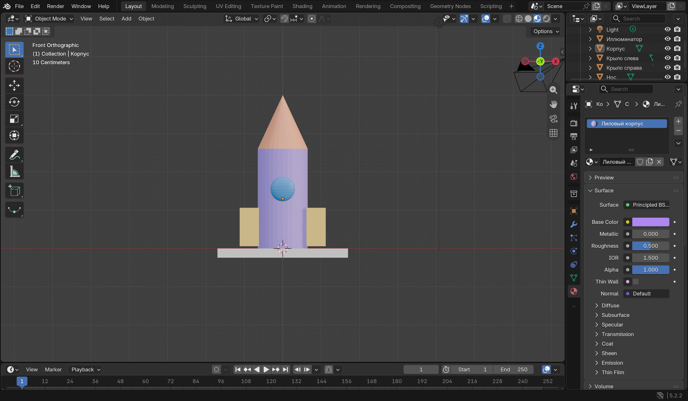
Пять, четыре, три…
Это одна из ракет. Твоя может быть полосатой, огромной или совсем крошечной.
-
Выбери цвет корпуса
Выбери корпус. Справа открой Material Properties — значок красного шарика. Нажми New, затем Base Color и выбери цвет. Если трудно, делайте вместе со взрослым.
Покажи мне: цвет корпуса
Настоящий Blender 5.2. Нажми на картинку, чтобы рассмотреть её крупнее. Твоя модель может выглядеть иначе.
Открой свойства материала
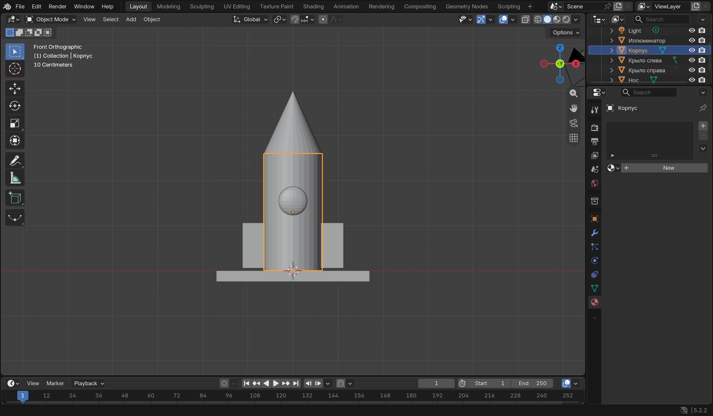
Снова посмотри спереди. Выбери корпус и справа нажми значок красного шарика Material Properties, затем New. Цвет можно выбрать вместе со взрослым.
Проверь: У корпуса появился свой материал.
Выбери цвет корпуса
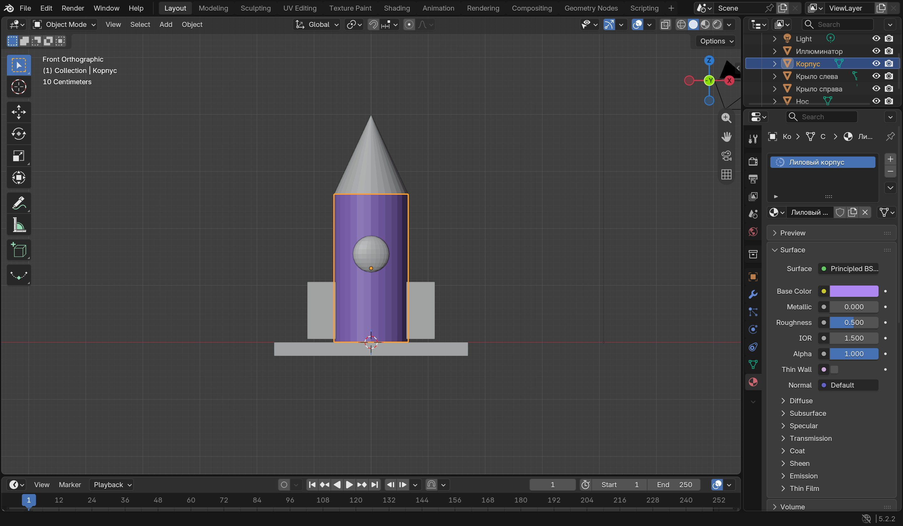
В материале найди Base Color и нажми на цветной прямоугольник. Выбери любимый цвет. Название материала можно придумать своё: например, «Лунная ягода».
Проверь: В Base Color показан выбранный цвет. Другие детали пока могут оставаться серыми.
-
Посмотри на цветную ракету
Нажми шарик Material Preview справа вверху рабочей области. Хочешь — покрась нос, крылья и окошко по одному. Если нет, одного цвета достаточно.
Покажи мне: цветной вид
Настоящий Blender 5.2. Нажми на картинку, чтобы рассмотреть её крупнее. Твоя модель может выглядеть иначе.
Включи цветной вид
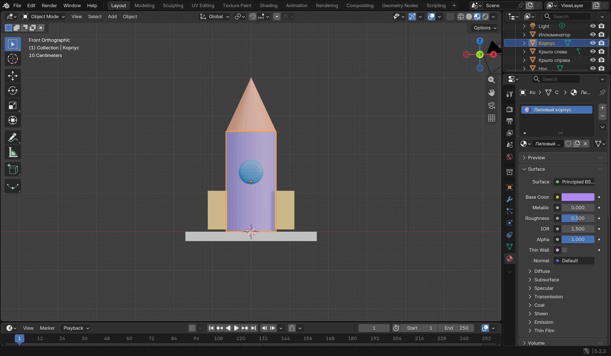
В правом верхнем углу рабочей области нажми шарик Material Preview. Если хочется, выбери нос, крылья и окошко по одному и дай каждому свой цвет.
Проверь: Ракета выглядит цветной прямо в рабочей области.
Проверь свою ракету
Посмотри на ракету целиком. Нос наверху, крылья внизу, окошко спереди. Цвета и число украшений выбираешь ты.
Проверь: У ракеты есть форма и собственный характер — можно назвать её и отправить в воображаемый полёт.
-
Сохрани и объяви запуск
Открой File → Save As. Вместе со взрослым выбери папку и имя rocket.blend. Расскажи, кто летит и куда. Звуки старта приветствуются!
Покажи мне: сохранить ракету
Настоящий Blender 5.2. Нажми на картинку, чтобы рассмотреть её крупнее. Твоя модель может выглядеть иначе.
Открой File → Save As
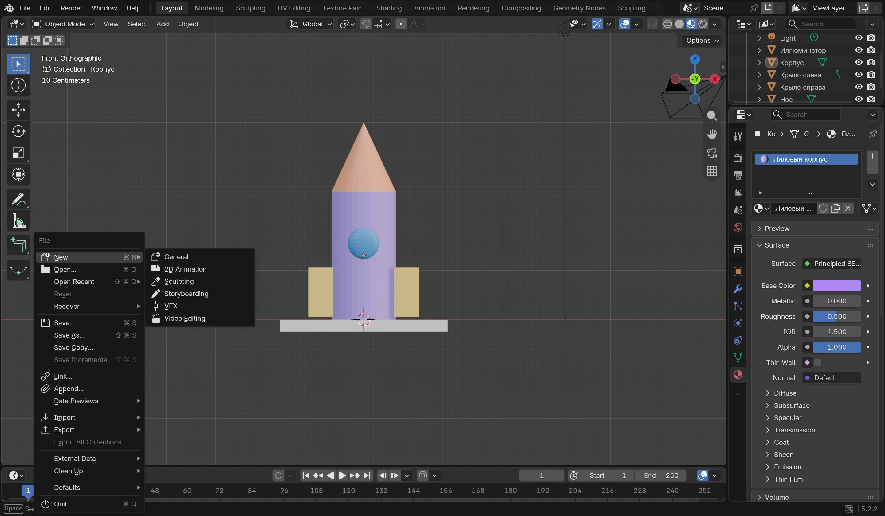
Открой File в верхнем левом углу и выбери Save As. Вместе со взрослым выбери папку и сохрани файл rocket.blend. Для уже сохранённого файла в следующий раз достаточно File → Save.
Проверь: В выбранной папке есть файл rocket.blend. Запомни эту папку.


Что у меня получилось
Ура, ракета готова к старту!
Что пассажир увидит первым? Если хочется продолжить, придумай планету из большого шара. А можно просто полюбоваться ракетой.
Для взрослых: подготовка и помощь
Это четыре короткие встречи, а не одна длинная сборка. Для 6–7 лет читайте шаги вслух и помогайте с клавиатурой; для 8–10 лет оставляйте ребёнку выбор формы, цвета и истории. Можно остановиться после любого удачного шага.
Перед началом
- Откройте Blender 5.2 LTS в Layout и Object Mode. Начинайте с новой стандартной сцены; куб используется как площадка. Если его нет, добавьте Cube через Add → Mesh.
- Вид Front помогает поставить детали по X и Z; вид Right помогает проверить глубину по Y. Числа на снимках подходят только примерной модели, не задают «правильный» размер.
- Во второй неделе достаточно примитивов. Extrude в Edit Mode можно показать отдельно, если ребёнок просит, но для готовой ракеты он не нужен.
- Сохраните отдельный файл rocket.blend. Изображения в подсказках сняты в настоящем Blender на отдельной учебной сцене, а модель ребёнка может отличаться.
Что считать успехом
Ребёнок выбрал пропорции, добавил цилиндр и конус, придумал пассажира и сохранил работу вместе со взрослым. Второе крыло, несколько цветов и ровная симметрия не обязательны.